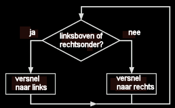

De simulatie rechts toont een zeehond die een bal probeert te balanceren.
De bal is aan de neus van de zeehond bevestigd via een veer.
De beweging van de zeehond wordt bepaald door een eenvoudige bewegingswet. Als de bal (gezien vanaf de neus) ofwel in het kwadrant linksboven of rechtsonder gelegen is, dan versnelt de zeehond naar de linkerkant. Anders versnelt de zeehond naar rechts.
De kwadranten zijn afgebeeld op de schijf rechtsboven. Je kan de zeehond plagen door de bal te bewegen of te verslepen. De zeehond blijft zijn best doen om de bal te balanceren.
|
 |
De bewegingswetten voor het balanceren